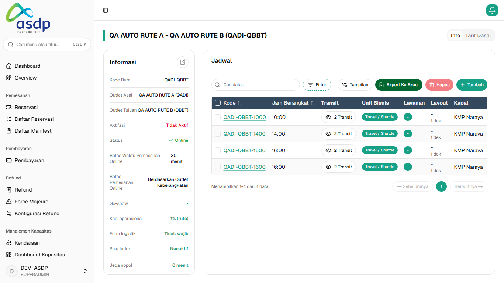
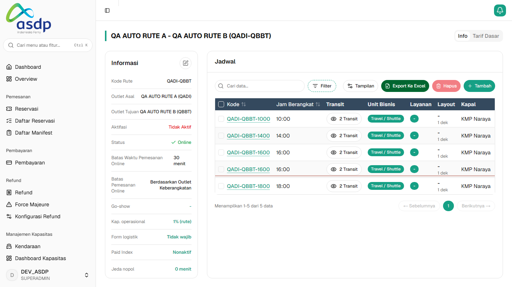

RJ-T05 — Form Tambah Jadwal menerima jam yang sama dua kali → 2 jadwal dengan kode yang SAMA Langkah: 1. Buka detail rute uji QADI-QBBT → Tambah (jadwal) 2. Isi Jam Keberangkatan 1 = 16:00, klik Tambah, isi Jam Keberangkatan 2 = 16:00 (kode keduanya otomatis sama) 3. Unit Bisnis Travel / Shuttle → kapal KMP Naraya → waktu tiba 17:00 → Simpan Ekspektasi: Ditolak dengan pesan "jam/kode jadwal sudah dipakai", atau hanya 1 jadwal yang tersimpan Aktual: Toast: "Jadwal rute berhasil ditambahkan"; jumlah jadwal berkode QADI-QBBT-1600 sekarang: 2

[TEMUAN] RJ-T05 — Form Tambah Jadwal menerima jam yang sama dua kali → 2 jadwal dengan kode yang SAMA Langkah: 1. Buka detail rute uji QAMK-QBAT → Tambah (jadwal) 2. Isi Jam Keberangkatan 1 = 16:00, klik Tambah, isi Jam Keberangkatan 2 = 16:00 (kode keduanya otomatis sama) 3. Unit Bisnis Travel / Shuttle → kapal KMP Naraya → waktu tiba 17:00 → Simpan Ekspektasi: Ditolak dengan pesan "jam/kode jadwal sudah dipakai", atau hanya 1 jadwal yang tersimpan Aktual: Toast: "Jadwal rute berhasil ditambahkan"; jumlah jadwal berkode QAMK-QBAT-1600 sekarang: 2 (bukti: hasil\bukti\RJ-T05_20261113-153201.png) [TEMUAN] RJ-T05 — Form Tambah Jadwal menerima jam yang sama dua kali → 2 jadwal dengan kode yang SAMA Langkah: 1. Buka detail rute uji QADI-QBBT → Tambah (jadwal) 2. Isi Jam Keberangkatan 1 = 16:00, klik Tambah, isi Jam Keberangkatan 2 = 16:00 (kode keduanya otomatis sama) 3. Unit Bisnis Travel / Shuttle → kapal KMP Naraya → waktu tiba 17:00 → Simpan Ekspektasi: Ditolak dengan pesan "jam/kode jadwal sudah dipakai", atau hanya 1 jadwal yang tersimpan Aktual: Toast: "Jadwal rute berhasil ditambahkan"; jumlah jadwal berkode QADI-QBBT-1600 sekarang: 2 (bukti: hasil\bukti\RJ-T05_20261113-153327.png)
RJ-T06 — Jadwal dengan waktu tiba sebelum jam berangkat (hari ke tujuan = 1) bisa disimpan; estimasi waktu jadi negatif Langkah: 1. Buka detail rute uji QADI-QBBT → Tambah (jadwal) 2. Jam Keberangkatan 18:00, Unit Bisnis Travel / Shuttle → kapal KMP Naraya 3. Langkah 5: Hari ke Tujuan = 1, Waktu Tiba = 17:00 → Simpan Ekspektasi: Ditolak: waktu tiba harus setelah jam berangkat (atau hari ke tujuan otomatis jadi 2) Aktual: Toast: "Jadwal rute berhasil ditambahkan"; jadwal QADI-QBBT-1800 tersimpan, estimasi "- 1 jam - 0 km -"

[TEMUAN] RJ-T06 — Jadwal dengan waktu tiba sebelum jam berangkat (hari ke tujuan = 1) bisa disimpan; estimasi waktu jadi negatif Langkah: 1. Buka detail rute uji QAMK-QBAT → Tambah (jadwal) 2. Jam Keberangkatan 18:00, Unit Bisnis Travel / Shuttle → kapal KMP Naraya 3. Langkah 5: Hari ke Tujuan = 1, Waktu Tiba = 17:00 → Simpan Ekspektasi: Ditolak: waktu tiba harus setelah jam berangkat (atau hari ke tujuan otomatis jadi 2) Aktual: Toast: "Jadwal rute berhasil ditambahkan"; jadwal QAMK-QBAT-1800 tersimpan, estimasi "- 1 jam - 0 km -" (bukti: hasil\bukti\RJ-T06_20261113-153210.png) [TEMUAN] RJ-T06 — Jadwal dengan waktu tiba sebelum jam berangkat (hari ke tujuan = 1) bisa disimpan; estimasi waktu jadi negatif Langkah: 1. Buka detail rute uji QADI-QBBT → Tambah (jadwal) 2. Jam Keberangkatan 18:00, Unit Bisnis Travel / Shuttle → kapal KMP Naraya 3. Langkah 5: Hari ke Tujuan = 1, Waktu Tiba = 17:00 → Simpan Ekspektasi: Ditolak: waktu tiba harus setelah jam berangkat (atau hari ke tujuan otomatis jadi 2) Aktual: Toast: "Jadwal rute berhasil ditambahkan"; jadwal QADI-QBBT-1800 tersimpan, estimasi "- 1 jam - 0 km -" (bukti: hasil\bukti\RJ-T06_20261113-153350.png)
Error: locator.isVisible: Error: strict mode violation: getByRole('dialog') resolved to 2 elements: | 1) <div role="dialog" tabindex="-1" id="radix-_r_3a_" data-state="open" data-slot="dialog-content" data-testid="route-dialog" aria-labelledby="radix-_r_3b_" aria-describedby="radix-_r_3c_" class="fixed top-1/2 left-1/2 z-50 max-w-[calc(100%-2rem)] -translate-x-1/2 -translate-y-1/2 rounded-lg border border-t-4 border-t-primary bg-background text-sm text-foreground shadow-lg duration-200 outline-none data-open:animate-in data-open:fade-in-0 data-open:zoom-in-95 data-closed:animate-out data-closed:fade-o…>…</div> aka getByTestId('route-dialog') | 2) <div role="dialog" tabindex="-1" id="radix-_r_3m_" data-side="bottom" data-align="start" data-state="closed" data-slot="popover-content" class="z-50 flex origin-(--radix-popover-content-transform-origin) flex-col gap-2.5 rounded-lg bg-popover text-sm text-popover-foreground shadow-md ring-1 ring-foreground/10 outline-hidden duration-100 data-[side=bottom]:slide-in-from-top-2 data-[side=left]:slide-in-from-right-2 data-[side=right]:slide-in-from-left-2 data-[side=top]:slide-in-from-bottom-2 data-ope…>…</div> aka locator('#radix-_r_3m_') | Call log: | - checking visibility of getByRole('dialog')
Tidak ada gangguan koneksi.
Tidak ada.
| No | Berkas | Test | Jenis | Status | Detik |
|---|---|---|---|---|---|
| 1 | UI\rute-ubah.spec.ts | Rute & Jadwal — siklus data uji > [Positif] RJ-30 Tambah rute A → B → muncul di daftar: Aktif, Online, belum ada jadwal | PEMERIKSAAN | LULUS | 7.3 |
| 2 | UI\rute-ubah.spec.ts | Rute & Jadwal — siklus data uji > [Positif] RJ-31 Tambah jadwal 10:00 (kapal default) di detail rute → tampil di detail & daftar "1 Jadwal" | PEMERIKSAAN | LULUS | 8.7 |
| 3 | UI\rute-ubah.spec.ts | Rute & Jadwal — siklus data uji > [Positif] RJ-32 dampak: rute baru muncul di Keberangkatan & Alokasi dengan keberangkatan + kapal dari jadwal | PEMERIKSAAN | LULUS | 3.3 |
| 4 | UI\rute-ubah.spec.ts | Rute & Jadwal — siklus data uji > [Edge] RJ-37 jadwal hanya hari Senin + kapasitas jadwal 100% → keberangkatan hanya di hari Senin, kuota = kapasitas fisik | PEMERIKSAAN | LULUS | 10.5 |
| 5 | UI\rute-ubah.spec.ts | Rute & Jadwal — siklus data uji > [Positif] RJ-39 Ubah rute: kapasitas 70% & batas online 30 menit → konfirmasi, detail, dan kuota keberangkatan ikut berubah | PEMERIKSAAN | LULUS | 7.7 |
| 6 | UI\rute-ubah.spec.ts | Rute & Jadwal — siklus data uji > [Edge] RJ-40 Ubah rute: kapasitas tepat 1% (batas bawah) → tersimpan | PEMERIKSAAN | LULUS | 8.2 |
| 7 | UI\rute-ubah.spec.ts | Rute & Jadwal — siklus data uji > [Temuan] RJ-T05 dua jam yang sama di satu form seharusnya ditolak (bukan 2 jadwal berkode sama) | PEMERIKSAAN | LULUS | 9.6 |
| 8 | UI\rute-ubah.spec.ts | Rute & Jadwal — siklus data uji > [Temuan] RJ-T06 waktu tiba lebih awal dari jam berangkat (hari yang sama) seharusnya ditolak | PEMERIKSAAN | LULUS | 23.5 |
| 9 | UI\rute-ubah.spec.ts | Rute & Jadwal — siklus data uji > [Negatif] RJ-33 Hapus rute yang masih punya jadwal → ditolak, rute tetap ada | PEMERIKSAAN | LULUS | 3.5 |
| 10 | UI\rute-ubah.spec.ts | Rute & Jadwal — siklus data uji > [Negatif] PL-40 Hapus pelabuhan yang dipakai rute → ditolak, pelabuhan tetap ada | PEMERIKSAAN | LULUS | 3.2 |
| 11 | UI\rute-ubah.spec.ts | Rute & Jadwal — siklus data uji > [Positif] PL-39 pelabuhan Nonaktif tidak ditawarkan di form Tambah rute; Aktif lagi → ditawarkan | PEMERIKSAAN | GAGAL | 9.9 |
| 12 | UI\rute-ubah.spec.ts | Rute & Jadwal — siklus data uji > [Positif] RJ-34 nonaktifkan rute → "Tidak Aktif" & hilang dari pilihan rute Keberangkatan; aktifkan lagi → kembali | PEMERIKSAAN | DILEWATI | 0.0 |
| 13 | UI\rute-ubah.spec.ts | Rute & Jadwal — siklus data uji > [Positif] RJ-35 Hapus 1 jadwal (10:00) → hilang dari detail, jumlah berkurang 1 | PEMERIKSAAN | DILEWATI | 0.0 |
| 14 | UI\rute-ubah.spec.ts | Rute & Jadwal — siklus data uji > [Positif] RJ-36 Hapus massal (Pilih semua → Hapus) → semua jadwal hilang, daftar rute kembali "Tambahkan" | PEMERIKSAAN | DILEWATI | 0.0 |
| 15 | UI\rute-ubah.spec.ts | Rute & Jadwal — siklus data uji > [Positif] RJ-38 Hapus rute tanpa jadwal → hilang dari daftar | PEMERIKSAAN | DILEWATI | 0.0 |
| 16 | UI\rute-ubah.spec.ts | Rute & Jadwal — siklus data uji > [Temuan] RJ-T10 pesan tolak hapus seharusnya bahasa pengguna, bukan nama tabel ("schedules", "pickupRoutes") | PEMERIKSAAN | DILEWATI | 0.0 |
Rute & Jadwal — siklus data uji > [Positif] RJ-34 nonaktifkan rute → "Tidak Aktif" & hilang dari pilihan rute Keberangkatan; aktifkan lagi → kembali: -
Rute & Jadwal — siklus data uji > [Positif] RJ-35 Hapus 1 jadwal (10:00) → hilang dari detail, jumlah berkurang 1: -
Rute & Jadwal — siklus data uji > [Positif] RJ-36 Hapus massal (Pilih semua → Hapus) → semua jadwal hilang, daftar rute kembali "Tambahkan": -
Rute & Jadwal — siklus data uji > [Positif] RJ-38 Hapus rute tanpa jadwal → hilang dari daftar: -
Rute & Jadwal — siklus data uji > [Temuan] RJ-T10 pesan tolak hapus seharusnya bahasa pengguna, bukan nama tabel ("schedules", "pickupRoutes"): -